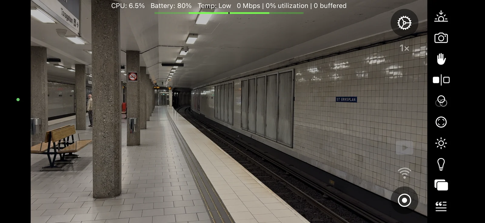
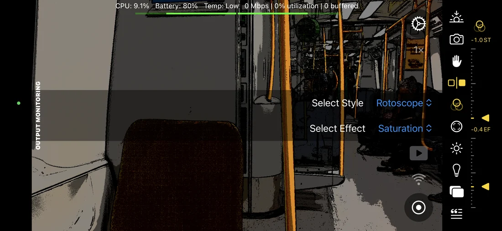
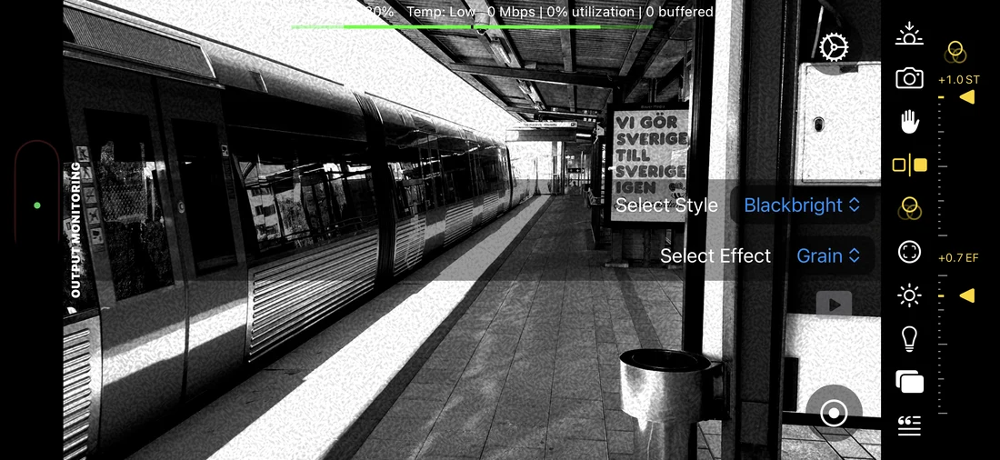
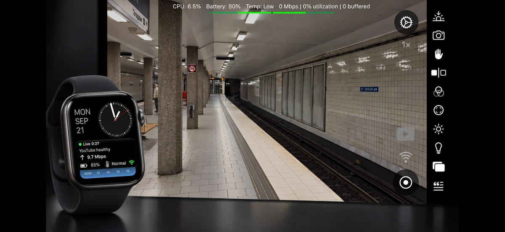

HDR video. iPhone to YouTube.
The whole event.
In its best light.
The match. The performance. The moment worth staying for.
Record beautiful HDR video and stream directly to YouTube, with a camera studio that fits in your hand.
Free to download · Optional one-time effects purchase
iPhone with iOS 18 or later


Stay for the whole story
Some moments need
more than a clip.
A full match. An evening on stage. A lesson people can return to. Tubeist is made for longer broadcasts where the picture matters more than instant conversation.
Keep the detail in bright skies and dark rooms. Set your shot, add the information your audience needs, and let the event unfold.
- HDR
- 10-bit HLG video
Rich light and colour - Up to 4K
- Choose your resolution
and frame rate - 3 ways
- Record, stream,
or do both
Available resolutions, frame rates and HDR formats depend on your iPhone and selected camera. Streaming quality also depends on your connection.
A little studio. A lot of control.
Your picture.
Your choices.
Set focus, exposure and white balance. Choose your camera and microphone. Add web overlays for scores, titles or other live information.
Give the picture a different character with the optional Styles and Effects unlock, applied while you record or stream.


Make the everyday cinematic.
Combine a style and an effect to find a look that belongs to your production.


Or take it somewhere else.
Explore a high-contrast monochrome image, a different texture, or a more expressive palette.
Actual app screenshots. Styles and Effects is an optional one-time in-app purchase. Camera controls, recording and YouTube streaming are included in the free app.

Keep an eye on the essentials
Stay with
the moment.
See bandwidth, buffered footage, battery and temperature on your phone. Check session status from a compatible Apple Watch while the iPhone stays on the shot.
Tubeist adjusts its video bitrate when uploads slow down. Optional buffering can preserve more waiting footage, with extra delay when the connection struggles.
Understand connection settingsFrom first frame to first broadcast
Start with a recording.
Go live when ready.
Local recording works without a YouTube account. When you are ready to broadcast, connect a channel that is already enabled for live streaming.
Tubeist sends your stream straight to YouTube. There is no relay server to set up.
Find your frame.
Allow Camera and Microphone access. Choose a preset and try Record Only to get comfortable with the controls.
Connect your channel.
Sign in with Google to create an HLS stream key and manage your broadcast, or paste an existing HLS key without signing in.
Make it yours.
Check the title, audience and visibility, save your settings, and start. Keep Tubeist open through the broadcast and while stopping finishes.
Personal projects. Professional productions.
Your next broadcast
starts here.
Use Tubeist for your club, your channel or your paid work.
Commercial use is welcome. No subscription or commercial licence fee.
Free recording and streaming · Optional paid styles and effects
Read about use and licensing